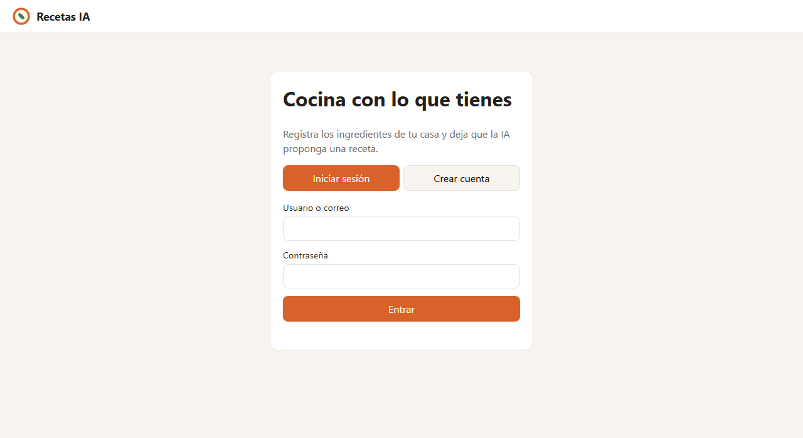
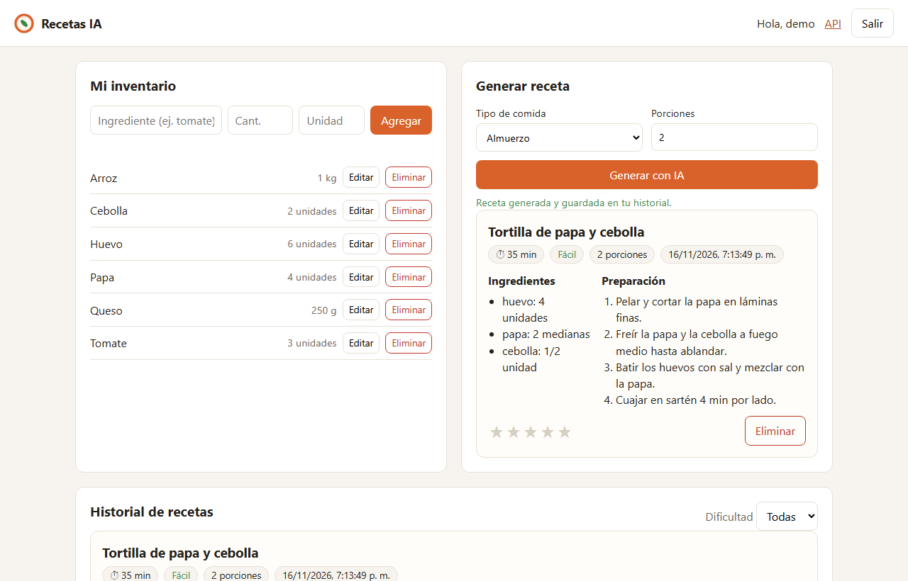
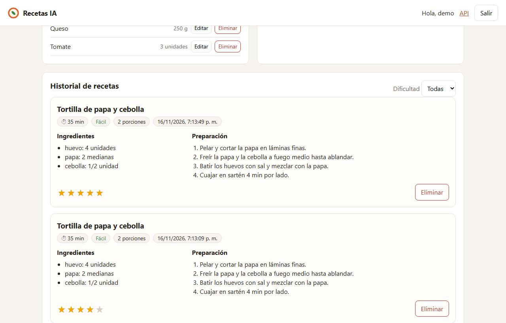
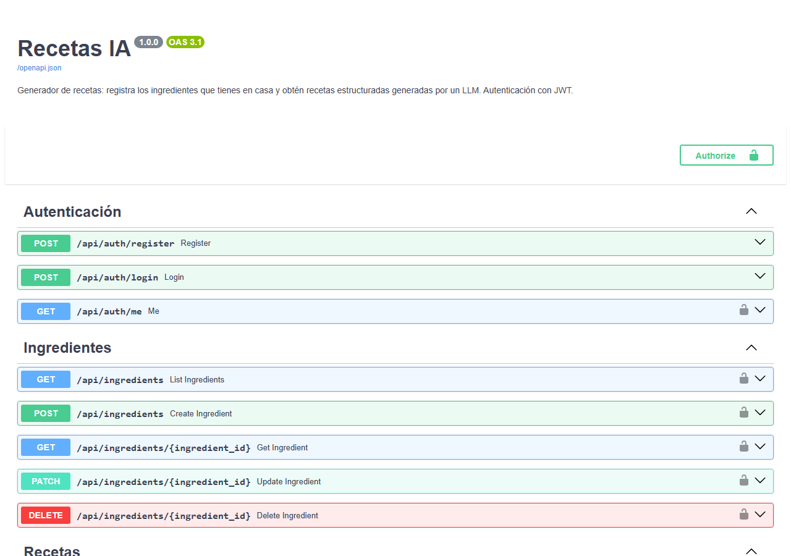

/docs (Swagger)
Aplicación web en la que cada usuario registra los ingredientes que tiene en casa y obtiene recetas generadas por un modelo de lenguaje (LLM) a partir de ese inventario. Las recetas se guardan en MySQL y el usuario puede consultarlas en su historial, calificarlas de 1 a 5 estrellas y eliminarlas. La interacción con el LLM no es un chatbot: el usuario solo elige el tipo de comida y el número de porciones, y un servicio interno construye el prompt, llama al proveedor y valida la respuesta.
| # | Funcionalidad | Endpoint(s) REST |
|---|---|---|
| 1 | Registro e inicio de sesión (JWT) | POST /api/auth/register · POST /api/auth/login · GET /api/auth/me |
| 2 | CRUD de ingredientes del inventario | GET/POST /api/ingredients · GET/PATCH/DELETE /api/ingredients/{id} |
| 3 | Generar receta a partir del inventario | POST /api/recipes/generate |
| 4 | Ver recetas generadas (historial y filtros) | GET /api/recipes?difficulty=&min_rating= · GET /api/recipes/{id} |
| 5 | Calificar una receta (1 a 5 estrellas) | PUT /api/recipes/{id}/rating |
| 6 | Eliminar recetas del historial | DELETE /api/recipes/{id} |
build_prompt() → OpenRouter → parse_recipe_response() valida el JSON (nombre, ingredientes con cantidades, pasos, tiempo, dificultad) → se guarda en recetas.Stack: Python 3.13 · FastAPI · SQLAlchemy 2 · Pydantic 2 · PyJWT + bcrypt · httpx · MySQL 8.4 · pytest · Docker / Docker Compose · Caddy 2.
Cuatro tablas: usuarios, ingredientes, recetas y calificaciones. Cada ingrediente y receta
pertenece a un usuario; los nombres de ingredientes son únicos por usuario y cada receta tiene como máximo una
calificación. Todas las claves foráneas usan ON DELETE CASCADE, así que al eliminar una receta se elimina su calificación.
| Decisión | Justificación |
|---|---|
| FastAPI + SQLAlchemy 2 + Pydantic | Tipado, validación automática de entradas y documentación OpenAPI/Swagger sin código adicional. |
| JWT (HS256) + bcrypt | Autenticación sin estado, adecuada para una API REST; las contraseñas nunca se guardan en texto plano. |
Servicio LLM encapsulado (LLMService) | El resto de la app no conoce al proveedor: recibe un objeto validado. Cambiar de OpenRouter a Groq solo afecta a un archivo. |
| Contrato JSON validado con Pydantic | Los LLM devuelven formatos inconsistentes: se normalizan (p. ej., "Fácil" → facil, "30 minutos" → 30), se toleran bloques markdown, y una respuesta inválida produce HTTP 502 en vez de guardar datos corruptos. Hay un reintento automático. |
| Columnas JSON para ingredientes y pasos | La receta es un documento que siempre se lee completo; evita tablas extra sin perder estructura. |
Inyección de dependencias (get_llm_service, get_db) | Permite probar los endpoints con un LLM falso y SQLite en memoria, sin red ni costo. |
| Caddy en vez de Nginx + Certbot | Emite y renueva el certificado SSL automáticamente con una configuración de pocas líneas. |
Secretos en .env | Nunca se versionan; .env.example documenta todas las variables. La app no arranca con una clave JWT débil. |
| Amenaza | Mitigación implementada |
|---|---|
| Fuerza bruta / abuso del LLM | 10 intentos de login/min por IP y 5 generaciones/min por usuario (HTTP 429); máximo 100 ingredientes por usuario. |
| Tokens falsificados | Algoritmo fijo (se rechaza alg=none), exp y sub obligatorios, expiración de 60 min. |
| Acceso a datos ajenos (IDOR) | Todas las consultas filtran por user_id; los recursos de otro usuario responden 404. |
| Inyección SQL y XSS | Consultas parametrizadas del ORM; el frontend usa textContent y una CSP script-src 'self'. |
| Inyección de prompt | Nombres validados con expresión regular; el inventario va delimitado entre <inventario> y la salida se valida con un esquema estricto. |
| Transporte y cabeceras | HTTPS + HSTS, X-Frame-Options, nosniff, no-store en la API; MySQL y la app no se exponen a Internet; contenedor sin root. |




/docs)Capturas tomadas en el entorno de desarrollo local (respuesta del LLM simulada). En producción (https://74-50-85-180.sslip.io) la receta la genera OpenRouter.
Las pruebas usan SQLite en memoria y un LLM falso inyectado, por lo que no requieren MySQL ni API key. Configuración en pytest.ini.
docker compose up -d --build levanta tres servicios: db (MySQL), app (FastAPI) y caddy (HTTPS).
Requisitos: un VPS con Docker, un registro DNS tipo A del dominio hacia la IP del servidor y el archivo .env
(variable DOMAIN, clave JWT, credenciales de MySQL y OPENROUTER_API_KEY). El paso a paso está en el README del repositorio.
Control de versiones: repositorio público en GitHub con commits descriptivos por módulo (configuración, modelos, autenticación,
CRUD, servicio LLM, endpoints, interfaz, pruebas, Docker, seguridad y documentación), README.md completo y .env.example.